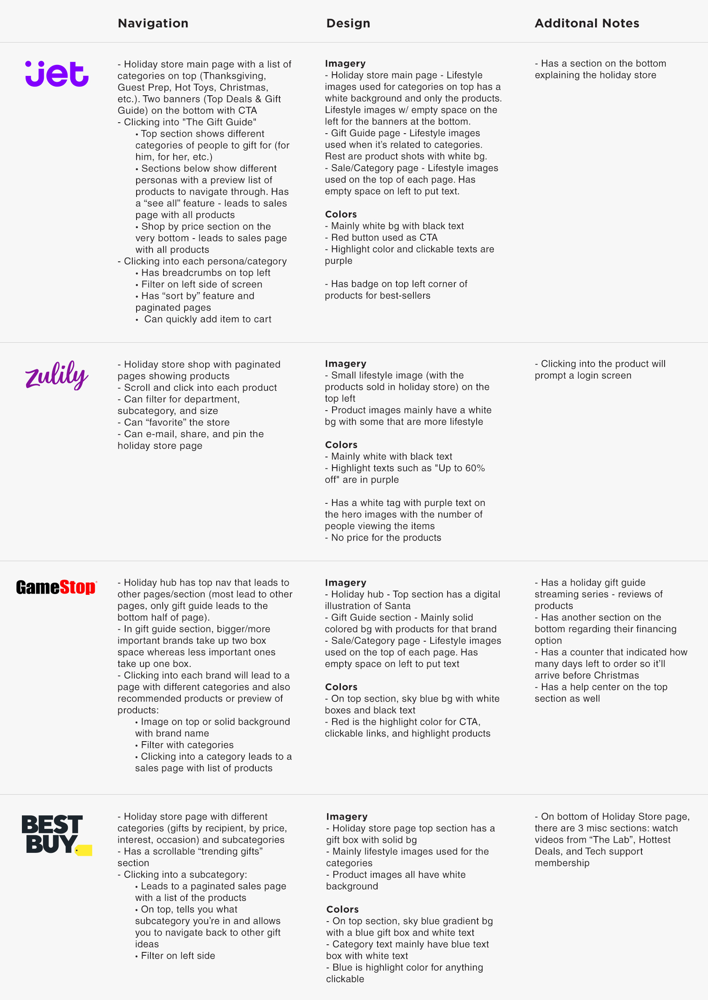

TOMO Holiday Store Design
Touch of Modern (TOMO) is an e-commerce website that offers a large selection of uniquely curated products. Every holiday season, we make it a priority to make holiday shopping less of a chore by allowing customers to shop on our holiday store, a persona-based gift guide, that runs from August to December. The goal of this project was to create a new design for the holiday store that clearly displays each persona and the types of products offered to increase the purchase rate and product revenue.
01. Research
Since this is a recurring project, I reviewed the past designs to see what worked well and what did not work well. I also spent time talking to TOMO employees to get their feedback on previous Holiday Store designs.
Challenge
The previous designs lacked real-life product shots that clearly tells users what type of products are offered in each category. The design also blended in with the sales so users can easily ignore it. Additionally, there was no emphasis on how quickly we ship the items offered in the holiday store.
Goal
Design a holiday store for the homepage, hub, and individual stores that incorporates lifestyle photos while keeping a clean and polished design that stands out from the rest of the sales.
Audience
New and old customers
- Mainly men in their 30’s
- Women looking for holiday gifts for their significant others
Competitive Analysis
To get a deeper understanding of how the holiday season works for other e-commerce companies, I took some time to look at the user flow and design of some competitors.
02. Analysis
After analyzing the data gathered from talking to coworkers and the competitive analysis, I was able to come up with some features I would like to change. However, due to the time constraint, I narrowed the list down to these main changes:
- Feature actual product images related to each store.
- Incorporate animation for featured stores on homepage to make it feel different from our sales.
- Adding the expected delivery date to give users a sense of security that it will arrive on time.
03. Design
A few designs were drafted, each focusing on using more lifestyle/product shots. These were shown to the stakeholders.
After discussing the different iterations, we decided to pick the design that was more product-based since we felt that it was clean and clearly showed users what was being offered in each persona. Also, we wanted to stray away from overlaying text on top of photos since it would be hard for users to see the photo. Here is the final product:

04. Test & Reflect
After a few rounds of QA with the engineer, the holiday store was tested to ensure there were no bugs. An excel sheet was also created to track any bugs or issues found.
Lessons learned
- Animations can be difficult to explain to engineers. Always include mock up and specs (type of transition, transition time, opacity, etc.) of the animation.
- Be sure to carefully check the design on all screen size during QA to ensure that the design is responsive.
Future Plans
- Allow people to shop by price instead of just persona.
- Try full width to make the holiday store stand out from sales.
- Include filters and sort by feature for the holiday store.